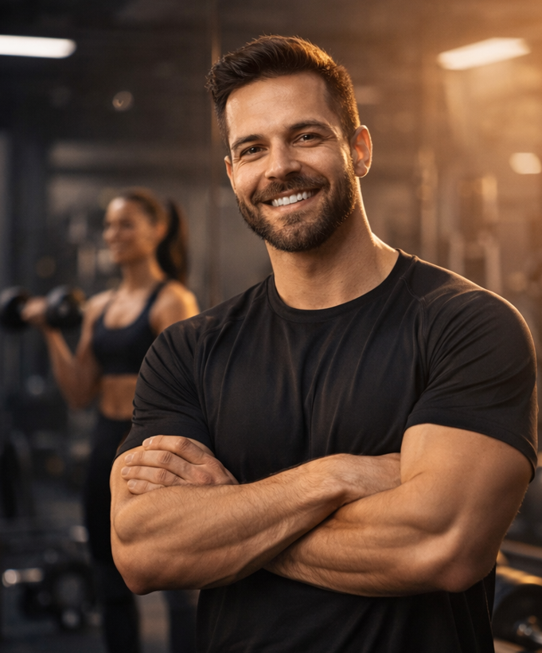

Soy David, entrenador personal certificado con más de 8 años de experiencia en el mundo del fitness y la preparación física. Mi pasión por el entrenamiento va mucho más allá de levantar pesas o marcar tiempos: para mí, el ejercicio es una herramienta de transformación física, mental y emocional.
Desde muy joven descubrí en el deporte una forma de superar límites, canalizar emociones y construir una vida más saludable y equilibrada. Eso me motivó a formarme profesionalmente en ciencias del deporte, nutrición aplicada al rendimiento y entrenamiento funcional. A lo largo de los años, he trabajado con personas de todas las edades y niveles, desde quienes dan sus primeros pasos hasta atletas que buscan mejorar su rendimiento competitivo.
Lo que más disfruto de mi trabajo es acompañar a cada persona en su camino, escuchando sus metas, entendiendo sus desafíos y creando un plan que sea realista, sostenible y efectivo. No creo en soluciones mágicas ni rutinas genéricas. Creo en el trabajo consciente, en el respeto al cuerpo, y en construir hábitos que duren toda la vida.
Mi método combina técnica, motivación y ciencia. Entrenamientos personalizados, seguimiento constante y una comunicación cercana para que nunca te sientas solo/a en el proceso.
Mi misión es simple: que descubras tu verdadero potencial, disfrutes del movimiento y transformes tu cuerpo desde el respeto, la disciplina y el entusiasmo.